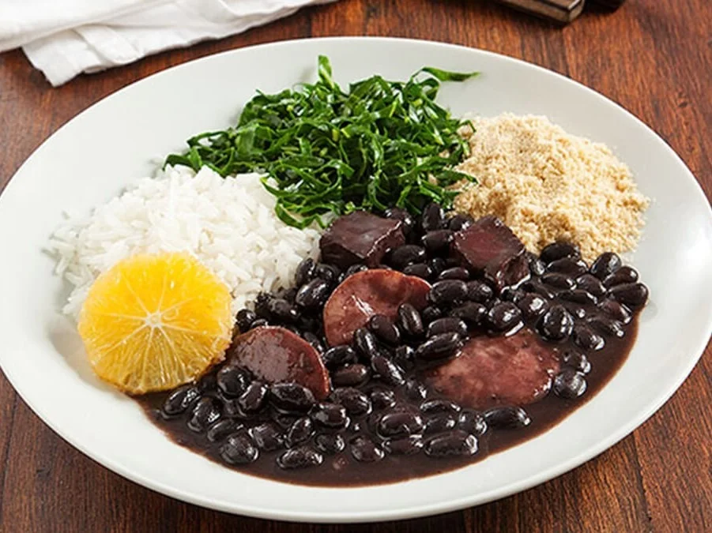

Feijoada

Descrição
A feijoada é um guisado rico de feijão preto cozido lentamente com diversas carnes suínas e bovinas, como costelinha, lombo, carne seca, paio e linguiça calabresa.
É considerada o prato nacional do Brasil, servido com acompanhamentos clássicos: arroz branco, couve refogada, farofa, torresmo e fatias de laranja.
Ingredientes
- feijão-preto
- Carnes salgadas e defumadas
- Alho
- Cebola
- Arroz Branco
- Couve
Passo a Passo
- Corte carnes secas, lombo e costelinha em cubos.
- Coloque o feijão e as carnes mais duras (carne-seca, pé, rabo) na panela de pressão com folhas de louro por cerca de 20-30 minutos após pegar pressão.
- Em outra panela, frite bacon, linguiça calabresa e paio. Adicione ao feijão cozido.
- Refogue bastante cebola e alho no azeite ou na gordura do bacon e adicione à feijoada já engrossada.
- Acompanhamentos Clássicos: Arroz branco, couve manteiga refogada, farofa, gomos de laranja fresca e molho de pimenta.
Home